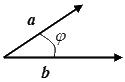
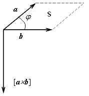

<html>
<head>
    <meta http-equiv=Content-Type content="text/html; charset=utf-8">
    <title>Вычислительная геометрия</title>
    <link rel="stylesheet" type="text/css" href="../style/style.css">
    <script type="text/x-mathjax-config">
        MathJax.Hub.Config({tex2jax: {inlineMath: [['$','$'], ['\\(','\\)']]}});


    </script>
    <script type="text/javascript"
            src="http://cdn.mathjax.org/mathjax/latest/MathJax.js?config=TeX-AMS-MML_HTMLorMML">
    </script>
</head>
<body>
<div style="width:80%;">
    <div style="float:right;margin-top:-10px;">
        <object classid="clsid:D27CDB6E-AE6D-11cf-96B8-444553540000"
                codebase="http://download.macromedia.com/pub/shockwave/cabs/flash/swflash.cab#version=6,0,0,0"
                width="100" height="50">
            <param name="movie" value="../audio/a_smsqulh3n.swf">
            <param name="bgcolor" value="fff">
            <param name="FlashVars" value="src=../audio/8016574696f643030301------------ffffff">
            <param name="autoplay" value="false">
            <embed src="../audio/a_smsqulh3n.swf" bgcolor="fff" width="100" height="70"
                   type="application/x-shockwave-flash" pluginspage="http://www.macromedia.com/go/getflashplayer"
                   FlashVars="src=../audio/8016574696f643030301------------ffffff"></embed>
        </object>
    </div>
</div>

<div id="content">
<h1>Вычислительная геометрия</h1>

<h3>Задача "Максимальное расстояние"</h3>


<p><strong>Вычислительная геометрия</strong> – это раздел информатики, изучающий алгоритмы решения геометрических
    задач [1]. При программировании решений к задачам на геометрию требуется своя
    специфика. Хорошей литературы на эту тему не так уж много, но все-таки
    несколько источников указать можно [2], [3], [4].</p>

<h2> Основные геометрические понятия</h2>

<h3> Системы координат и векторы</h3>

<p>Положение
    любой точки $P$ в пространстве (в частности, на плоскости) может быть определено
    при помощи той или иной системы координат. Числа, определяющие положение точки,
    называются <strong>координатами</strong> этой точки. Наиболее употребительные координатные
    системы - декартовы
    прямоугольные. Кроме прямоугольных систем координат существуют косоугольные
    системы. Прямоугольные и косоугольные координатные системы объединяются под
    названием <i>декартовых систем координат</i>.</p>

<p>Иногда на
    плоскости применяют полярные системы координат, а в пространстве - цилиндрические
    или сферические
    системы координат.</p>

<div style="float:right;margin:0 0 0 10px;">

    <p class="title">Рис. 1</p>
</div>

<p>Для задания
    декартовой прямоугольной системы координат нужно выбрать несколько взаимно
    перпендикулярных прямых, называемых осями. Точка пересечения осей $O$ называется
    началом координат. На каждой оси нужно задать положительное направление и
    выбрать единицу масштаба. Координаты точки P считаются положительными или
    отрицательными в зависимости от того, на какую полуось попадает проекция точки
    $P$. </p>

<p>Когда говорят про двухмерную систему координат, горизонтальную ось называют осью абсцисс
    (осью $Ox$), вертикальную ось - осью ординат (осью $Оy$). Положительные направления выбирают на оси $Ox$ - вправо, на оси
    $Oy$ - вверх. Координаты $x$ и $y$ называются соответственно абсциссой и ординатой точки.
    Запись P(a,b) означает, что точка $P$ на плоскости имеет абсциссу a и ординату b 
    (рис.1).</p>

<p>Декартовыми прямоугольными <strong>координатами</strong> точки P в трехмерном пространстве называются взятые
    с определенным знаком расстояния (выраженные в единицах масштаба) этой точки до
    трех взаимно перпендикулярных координатных плоскостей. В зависимости от
    взаимного расположения положительных направлений координатных осей возможны
    левая и правая координатные системы.</p>

<div style="float:left;margin:0 10px 0 0;">

    <p class="title">Рис. 2</p>
</div>

<p>Отрезок,
    концы  которого упорядочены (рис.2), называется <strong>направленным</strong>
    (упорядоченность означает, что один конец отрезка считается начальной точкой, а
    другой – конечной).</p>

<p>Направленный
    отрезок называется <strong>вектором</strong>.</p>

<p>Длина вектора
    называется его <strong>модулем: <br>
    </strong>|<strong> </strong><strong><i>a</i></strong> | – обозначение
    модуля вектора <strong><i>a</i></strong>.</p>

<p>Проекции
    вектора <strong><i>a</i></strong> с<strong> </strong>начальной
    точкой (<i>X</i><sub>1</sub>,&nbsp;<i><span>y</span></i><sub>1</sub>) и конечной точкой
    (<i>X</i><sub>2</sub>,<i><sub>&nbsp;</sub></i>&nbsp;<span
       <span>2</sub>) на оси координат называются <strong>координатами </strong>вектора<strong>:
       </strong><strong><i>a =</i></strong>{<i>X</i><sub>2</sub><i>
           – </i><i>X</i><sub>1</sub>, <i>Y</i><sub>2
       </sub><i>– y</i><sub>1</sub>} или <strong><i>a</i></strong>(<i>X,&nbsp;</i><i>Y</i>). Модуль вектора
    через его координаты: </p>

<p>Два вектора
    считаются равными, если они имеют одинаковую длину и направление (равенство
    соответствующих координат), следовательно, алгебраическое представление вектора
    — это упорядоченный набор чисел (его координаты). Сложение и вычитание векторов<strong><i>
    </i></strong><strong><i>a</i></strong>(<i>X</i><sub>1</sub><i>,</i><i>Y</i><sub>1</sub>) и
    <strong><i>b</i></strong>(<i>X</i><sub>2</sub>, <i>Y</i><sub>2</sub>),
    умножение вектора на число <i><span>t</span></i> определяются по
    следующим правилам:</p>

<p><strong><i>a</i></strong><i> </i>&#177;<i> <strong>b</strong></i><span> = (</span><span>pan>1</span><i>&nbsp;</i></sub>&#177; <i>X</i><sub><span>2</span></sub><span><span></span><i><sub>&nbsp;</sub></i>&#177; <i><span>Y</span></i><sub><span>2</spa<span></span></p>

<p><i><span>t<strong>a</strong></span></i> = (<i><<span>/i><sub>1</sub><i>,
</i><i><span>tY</span></i><sub>1</sub>)</p>

<p style='text-indent:18.0pt'>Вектора,
    отличающиеся множителем, называются <strong><i>коллинеарными</i></strong>.</p>


<h3>4.1.2. Скалярное и векторное
    произведение</h3>

<p><strong>Скалярное
    произведение</strong> двух векторов – это число, равное произведению модулей этих
    векторов на косинус угла между ними <i>(</i><strong><i>a</i></strong><i>,
    </i><strong><i>b</i></strong><i>)</i> = |<strong><i>a</i></strong>|&#183;|<strong><i>b</i></strong>|
    <i><span>cos</span></i><i>&#966;</i>.</p>

<p><i><cite>Следствие.</cite></i>
    Если два вектора перпендикулярны, то их скалярное произведение равно нулю.</p>

<p>Угол между
    векторами – это наименьший угол между направленными отрезками, приведенными к
    одной начальной точке (рис. 3). </p>

<div style="float:left;margin:0 10px 0 0;">

    <p class="title">Рис. 3</p>
</div>

<p style='margin-left:47.85pt;'>1.&nbsp;&nbsp;&nbsp;Если угол <i>&#966;&nbsp;</i>- острый, то (<strong><i>a</i></strong><i>,
</i><strong><i>b</i></strong>)&gt;0.</p>

<p style='margin-left:37.85pt;'>2.&nbsp;&nbsp;&nbsp;Если
    угол <i>&#966; </i>-
    тупой, то <i>(</i><strong><i>a</i></strong><i>, </i><strong><i>b</i></strong>)&lt;0.</p>

<p style='margin-left:37.85pt;'>3.&nbsp;&nbsp;&nbsp;Если  
    вектор <strong><i>a</i></strong> перпендикулярен
    вектору<strong> </strong><strong><i>b</i></strong>, то
    (<strong><i>a</i></strong><i>, </i><strong><i>b</i></strong><i>)=</i>0.</p>

<p style='margin-left:37.85pt;'>4.&nbsp;&nbsp;&nbsp;<span>(<strong><i>a</i></strong>,<i> <strong>a</strong>) =
</i>|<strong><i>a</i></strong>|<sup>2</sup></span>.</p>

<p>Скалярное
    произведение двух векторов <strong><i>a</i></strong>(<i>X</i><sub>1</sub><i>, </i><i>Y</i><sub>1</sub>)<i>
    </i>и <strong><i>b</i></strong>(<i>X</i><sub>2</sub>, <i>Y</i><sub>2</sub>) через их координаты выражается следующим
    образом: (<strong><i>a</i></strong><i>, </i><strong><i>b</i></strong>) = <i>X<sub>1</sub></i> &#183; <i>X<sub>2
    </sub>+ </i><i>Y<sub>1 </sub></i>&#183; <i>Y</i><sub>2</sub></p>

<p>Из определения
    скалярного произведения можно найти косинус угла, выраженный через координаты
    векторов.</p>

<p style='text-indent:35.4pt'></p>

<p><i><cite>Следствие.</cite></i>
    Вектор <strong><i>b</i></strong>(<i>Y</i>,&nbsp;<i>-</i><i>X</i>) будет перпендикулярен вектору
    <strong><i>a</i></strong>(<i>X</i>,<i>
        &nbsp;Y</i>).</p>

<p style='text-indent:36.0pt'>&nbsp;</p>

<p>В трехмерном
    пространстве для векторов <strong><i>a</i></strong>(<i>X</i><sub>1</sub><i>,&nbsp;</i><i>Y</i><sub>1</sub>,<i>
        &nbsp;<span>Z</span></i><sub>1</sub>) и
    <strong><i><span></i><sub>2</sub>,&nbsp;<i>Y</i><sub>2</sub>,&nbsp;<i><span>Z</span></i><sub>2</sub>) соответственно формула скалярн<span>я выражается:<i>
        (</i><strong><i>a</i></strong><i>, </i><strong><i>b</i></strong>) =
    <i>X</i><sub>1</sub>&#183;<i>X</i><sub>2<i>
        </i></sub><i>+ </i><i>Y</i><sub>1</sub><i>&#183;</i><i>Y</i><sub>2 
        </sub><i>+ </i><i>Z</i><sub>1</sub>&#183;<i>Z</i><sub>2</sub>,<sub> </sub> а для угла -</p>

<p style='text-indent:36.0pt'></p>

<p>&nbsp;</p>

<div style="float:left;margin:0 10px 0 0;">

    <p class="title">Рис. 4</p>
</div>

<p><strong>Векторное произведение</strong> двух
    векторов – это вектор, обозначаемый [<strong><i>a&nbsp;</i></strong>&#215;&nbsp;<strong><i>b</i></strong>], который
    определяется
    следующими условиями:</p>

<ol style='margin-top:0' start=1 type=1>
    <li>длина вектора |[<strong><i><span>a</span> </i></strong>&#215; <strong><i><span>b</span></<span>trong><i>a</i></strong>|&#183;|<strong><i><span
        <span>></strong>|&#183;<i><span>sin</span></i><i>&#966;</i>;
        где
        <i>&<span>      между векторами (т.е. равна <span>S</s<span>    параллелограмма, построенного на сторонах <i>a</i>
        и <i>b</i>);
    </li>
    <li>[<strong><i>a<span> </span></i></strong><i>&#215;<span> </span></i><strong><i>b</i></strong>] вектор
        перпендикулярен ка<span>i>a</i></strong>, так и
        вектору <strong>;
    </li>
    <li>[<strong><i>a<span> </span></i></strong><i>&#215;<span> </span></i><strong><i>b</i></strong>] направлен
        как ось <i><span>oz</span> </i>к осям <i><span>   >ox</span></i> и
        <i><span>oy</span></i>,<span>ктора <strong><i>a</i></strong>, <strong><i>b</i></strong>
        и [<strong><i>a </i></strong><i>&#215; </i><<span>         >b</span></i></strong>] образуют правую тройку (по правилу
        “буравчика”, если вектор <strong><i>a</i></strong>
        поворачивать до вектора <strong><i>b </i></strong>по
        <span>i>
</ol>

<p style='text-indent:20pt'>&nbsp;</p>

<p>Векторное
    произведение геометрически представлено на рис.4.</p>

<p>Векторное
    произведение двух векторов через координаты выражается следующим образом: </p>

<p><span>[<strong><i>a </i></strong></span><i>&#215;</i><i><span> <strong>b</strong></span></i><span>] = (<i>Y</i><sub>1</sub></span><i>&#183;</i><i><span> Z<sub>2 </sub>-
Y<sub>2</sub></span></i><i>&#1<span>
        > Z</span></i><sub><span>1</span></sub><span>)</sp<span>g><i><span>i </span></i></strong><span>+ (<i>Z</i><sub>1</sub></span>&#183;<span>  > X<sub>2 </sub>- Z</span></i><sub><span>2</span></sub><i>
    &#183;<span>      > X</span></i><sub><span>1</span></sub><span>)</span><span styl<span>
Symbol'>&times;</span><strong><span>span></i></strong><span>(<i>X</i><sub>1<span>183;<i>Y</i><sub><span>2 </span></sub><i><span>- X</span></i><sub>
    <spa<span>><i>&#183;</i><i><span
    <span>/i><sub><span>1</span></sub><span>)</span><span style='font-family:
Symbol'>&times;</span><strong><i>k</i></strong> и<span>yle="float:left;margin:10px 10px 0 0;">
</div>

<p>где
    <st<span>strong>,
    <strong><i>j</i></strong>, <strong><i>k&nbsp;</i></<span>е вектора осей <span>OX</sp<span>        >OY</span>, <span>OZ</span> соответственно; <span>det</span>(…) – означает определитель матрицы, составленной из орт
    осей и координат исходных векторов.</p>

<p> Если
    плоскость исходных векторов взять за плоскость <span>XY</span>, то в
    формулах координаты Z<sub>1 </sub>и Z<sub>2
    </sub>равны нулю<span>xt-indent:20pt'>Следует
    обратить внимание на многозн<span>веденных геометрических понятий,
    которые можно использовать в различных задачах. Например, для понятия векторное
    произведение:</p>
<ul>
    <li>длина результирующего вектора определяет площадь параллелограмма,
        построенного на заданных векторах;
    </li>

    <li>нулевое значение длины — параллельность векторов;</li>

    <li>результирующий вектор определяет нормаль к плоскости заданных
        векторов;
    </li>

    <li>его направление означает, что один вектор расположен «слева» или
        «справа» относительно другого.
    </li>
</ul>
<h3>4.1.3. Уравнения прямой и
    окружности на плоскости</h3>

<p style='margin: 6.0pt 0cm 0cm;text-indent:17.0pt'>a)<span
        style='font:7.0pt ""'>&nbsp;&nbsp;&nbsp;&nbsp;&nbsp; </span>Через
    заданную на плоскости точку с координатами (<i>X<sub>0</sub>,</i><i><span>y</span><sub>0</sub></i>) можно провести прямую, перпендикулярную
    вектору <strong>$n$</strong>(<i>a</i>,<i>b</i>). Для любой точки на этой прямой с координатами
    (<i>X,</i><i>Y</i>)
    направляющий вектор <strong><i><span>a&nbsp;</span>=</i></strong><strong><i><span>&nbsp;</span></i></strong>{<i>X – </i><i>X</<span>    </i>
        <i><span>y</span></i><i><sub> </sub>– y<sub>0</sub></i>}<i>
        </i>перпендикулярен  вектору нормали <strong>$n$</strong>,
    т.е. скалярное произведение (<strong>$n$</strong><i>, </i><strong><i>a<<span>i>= 0
    или
    <i>A(</i><i>X
                – </i><i>X</i><sub>0</sub>)<i><span>&nbsp;</span>+</i><i><span>&nbsp;</span>B(<<span>sp;</sub><i>– y</i><sub>0</sub>) = 0. Раскрывая скобки, легко
    получить <i><span>&nbsp;</span></i>классическое уравнение прямой<i>
                    Ax</i><i><span>&nbsp;</span>+</i><i><span>&nbsp;</span>By</i><i><span>&nbsp;</span>+</i><i><span>&nbsp;</span>C</i><i><span>&nbsp;</span></i>=<span>&nbsp;</span>0, где константа <i>C</i><span>  >&nbsp;</span></i>= <i>-A </i><i>X</i><sub>0</sub><i><span>&nbsp;</span>-B y</i><sub>0</sub>.</p>

<p style='margin: 6.0pt 0cm 0cm;text-indent:17.0pt'><i>b)<span
        style='font:7.0pt ""'>&nbsp;&nbsp;&nbsp;&nbsp;&nbsp; </span></i>Уравн<span>рпендикулярной данной <i>Ax</i><i><span>&nbsp;</span>+</i><i><span>&nbsp;</span>By</i><i><span>&nbsp;</span>+</i><i><span>&nbsp;</sp<span>bsp;</span>=</i><i><span>&nbsp;</span>0, </i>имеет в<span>n>Bx</span> - </i><i><span>Ay</span> + </i><i><span>C</span><sub>1</sub> = 0.</i></p>

<p style='margin: 6.0pt 0cm 0cm;text-indent:17.0pt'>c)<span
        style='font:7.0pt ""'>&nbsp;&nbsp;&nbsp;&nbsp;&nbsp; </span>Уравнение
    прямой, проходящей через две ра<span>рдинатами (<i>X</i><sub>1</sub><i>,</i><i><span>&<span>ub>1</sub>)
    <i>и (</i><i>X</i><sub>2</sub><i>,&nbsp;</i><<span> >y</span></i><sub>2</sub><i>)</i>, выражается следующей формулой:

<p class="image">t="69"></p>

<p style='text-indent:20pt'>Эта формула выражает коллинеарность векторов {<i>X
    – </i><i>X</i><sub>1</sub>, <i>Y</i><sub>&nbsp;</sub><i>– y</i><sub>1</sub>} и {<i>X</i><sub>2</sub><i>
    – </i><i>X</i><sub>1</sub>,<i> y</i><sub>2 </sub><i>– y</i><sub>1</sub>}
    д<span>X, </i><i>Y</i>)
    на прямой.</p>

<p style='text-indent:20pt'>От этого
    уравнения тоже ле<span>ению классического вида <i>Ax</i><i><span>&nbsp;</span>+</i><i><span>&nbsp;</span>By</i><i><span>&nbsp;</span>+</i><i><span>&nbsp;</span>C</i><i><span>&nbsp;</span>=</i><i><span>&nbsp;</span>0</i>, где <i>A</i><i><span>&nbsp;</span>=&nbsp;</i><i>Y</i><sub>1<i>&nbsp;</i></sub><i>–&nbsp;</i><i><span>y</span></i><sub>2</sub>,<i> B</i><i><span>&nbsp;</span>=</i><i><span>&nbsp;x</span></i><sub>2</sub><sub><span>&nbsp;</span></sub><i>–</i><i><span>&nbsp;x</span></i><sub>1</sub>, <i>C =</i><i>X</i><span> </i><i>Y</i><sub>2</sub><i>– </i><i>X</i><sub>2
    </sub><i><span>/p>

<p style='margin: 6.0pt 0cm 0cm;text-indent:17.0pt'>d)<s<span>font:7.0pt ""'>&nbsp;&nbsp;&nbsp;&nbsp; </span>Уравнение
    прямой в парам<span>ается системой уравнений</p>

<p style='margin-left:35.4pt;'><i><span>x&nbsp;=<span><sub><span>1</span></sub><i><span>+&nbsp;t (x</span></i><sub><span>2<span><i><span>–&nbsp;x</span></i><sub><span>1</span></sub><i><span>)</s<span>yle='margin-left:35.4pt;'><i><span>y&nbsp;&nbsp;= &nbsp;y</span></i><sub><span>1<i>&nbsp;</i></span></sub><i><span>+ t (y</span></i><sub><span>2</span></sub><i><span>– y</span></i><sub><span>1</span></sub><i><span>).</span></i></p>

<p style='margin-left:35.4pt;'>Эта же система
    может задавать и отрезок при <i><span>t</span></i> &#8712; [0, 1], и луч при
    <<span>     >t</span></i> &#8712;
    [0, <span style='font-family:Symb<span>>].</p>

<p style='
              margin: 6.0pt 0cm 0cm;text-indent:17.0pt'>e)<s<span>le='font:7.0pt ""'>&nbsp;&nbsp;&nbsp;&nbsp;&nbsp; </span<span>окружности с центром в точке с координатами  <i>(</i><i>X</i><span>,</i>
            <i><span>&nbsp;y</span></i><sub>1</sub><i>)</i> и радиусом <i>
                <sp
                <span>>r</span></i> имеет вид: (<i>X</i><sub><span
                <span>n></sub><i>–</i><i><span>&nbsp;x</span></i><sub>1</<span> </sup>+ (<i>Y – </i><sub> </sub><i>Y</i><sub>1</sub>)<sup>2</sup>
    = <i><span>r</span></i><sup>2</sup>.</p>

<p style='margin: 6.0pt 0cm 0cm;text-indent:17.0p<span>style='
   font:7.0pt ""'>&nbsp;&nbsp;&nbsp;&nbsp;&nbsp;&nbsp; </span>Уравнения
    окружности в параметрическом виде выглядят так:
</p>

<p style='margin-left:35.4pt;'><i><span>x&nbsp;= &nbsp;x</span></i><sub><span>1</span></sub><i><span>+ r cos</span></i><i>&#966;</i></p>

<p style='margin-left:35.4pt;'><<span>nbsp;&nbsp;= &nbsp;y</span></i><sub><span>1<i>&nbsp;</i></span></s
    <span> >+ r sin</span></i><i>&#966;</i><i><span><span>>&#966;</i><i>&nbsp;</i>&#8712; [0, 2&#960;]<i><span>.</span></i></p>


<h2>4.2. Отношения между геометрическими объектами</h2>

<h3>4.2.1. Расстояние и площадь</h3>

<p style='margin: 6.0pt 0cm 0cm;text-indent:17.0pt'>a)<span
        style='font:7.0pt ""'>&nbsp;&nbsp;&nbsp;&nbsp;&nbsp; </span>Расстояние
<i><span>d</span></i> между двумя точками с координатами
<i>(</i><i>X</i><sub>1</sub><i>, </i><i>Y</i><sub>1</sub><i>)
    <<span>>X</i><sub>2</sub><i>,&nbsp;</i><i><span>y</span></<span>i>)</i> вычисляется по формуле
</<span>"float:left;margin:20px 10px 0 0;">

    <p class="title">Ри<span>
<p style='margin: 6.0pt 0cm 0cm;text-inden<span>an
        style=' font:7.0pt ""'>&nbsp;&nbsp;&nbsp;&nbsp;&nbsp; </span>Расстояние <i><span>d</span></i> от точки <span>P</span><sub>1</sub>(<i>X</i><sub>1</sub><i>, </i><i>Y</i><sub>1</sub>)<i>
    </i>до прямой <i>Ax + By + C = </i>0 вычисляется следующим образом.
    </p>

<p style='margin-top:6.0pt;'>Предположим, что
    выбрана точка <span>P</span><sub>0</sub>(<i>X</i><i><sub>0</sub>,&nbsp;</i><i><span>y</span></i><i><sub>0</sub></i>), лежащая на прямой (рисунок
    5), тогда <i><span><span>роекция отрезка <span>P</span><sub>1</sub><span>P</span><sub>0</sub> на вектор <strong><span>n</span></strong>(a, b).
    Используя формулы скалярного произведения и свойство<i> Ax</i><sub>0</sub><i>
            &nbsp;+&nbsp;By</i><sub>0&nbsp;</sub><i>+&nbsp;C&nbsp;=&nbsp;</i>0,
    получим: <span style='position:relative;
top:13.0pt;vertical-align:b<span>img src="geom/12.png"></sub></s<span>ательно <span style=' position:relative;top:15.5pt;
vertical-align:baseline'><sub></sub></span>,</p>

<p style='margin-top:6.0pt;'>&nbsp;</p>

<p style='margin-top:6.0pt;'>причем, если убрать знак
    модуля из числителя, то получится ориентированное расстояние,<span> расположение точки относительно прямой.</p>

<p style='margin: 6.0pt 0cm 0cm;text-indent:17.0pt'>c)<span
        style='font:7.0pt <span>sp;&nbsp;&nbsp; </span>Вычисление
    расстояния <i><span>d</span></i> от точк<span>sub>1</sub><i>, </i><i>Y</i><sub>1</sub><i>)
    </i>до луча или отрезка отличается от вышеописанного, так как основание
    перпендикуляра, опущенного из точки на продолженную прямую, может не лежать на
    луче/отрезке. В этом случае кратчайшим расстоянием будет дистанция от точки до
    начальной точки луча или одной из начальных точек отрезка.</p>

<p style=' margin: 6.0pt 0cm 0cm;text-indent:17.0pt'>d)<span
        style='font:7.0pt ""'>&nbsp;&nbsp;&nbsp;&nbsp; </span> Площадь
    треугольника со сторонами <i>a, </i><i>b, </i><i>c</i> по формуле Герона <span
            style='position:relative;top:4.0pt;'></span>,
    где <i><span>p</span></i> – полупериметр треугольника.</p>

<p style='margin: 6.0pt 0cm 0cm;text-indent:17.0pt'>e)<span
        style='font:7.0pt ""'>&nbsp;&nbsp;&nbsp;&nbsp;&nbsp; </span>Площадь
    треугольника со сторонами <i>a, </i><i>b</i> и углом между ними <i>&#966;</i> вычисляется как половина площади
    параллелограмма, построенного на этих сторонах, с использованием формулы
    векторного произведения.</p>

<p style='margin-top:6.0pt;'> <i><span>S</span></i><i><sub><span style='font-family:Symbol'>D</span></sub></i><i><span> = </span></i><span>|[<strong><i>a </i></strong></span>&#215;<i><span> <strong>b</strong></span></i><span>]| / 2 =<strong> |</strong>(<i>x</i><sub>1</sub></span><i>&#183; </i><i>Y</i><sub><span>2 </span></sub><i><span>- x</span></i><sub><span>2</span></sub><i>&#183;</i><i>Y</i><sub><span>1</span></sub><span>)|
/ 2</span>.</p>

<h2 style='margin-top:6.0pt;'>Площадь произвольного многоугольника</h2>

<p style='margin: 6.0pt 0cm 0cm;text-indent:17.0pt'>f)<span
        style='font:7.0pt ""'>&nbsp;&nbsp;&nbsp;&nbsp;&nbsp;&nbsp; </span>Площадь
    произвольного многоугольника вычисляется как сумма ориентированных площадей
    треугольников, у которых одна вершина – начало координат, а две другие – пары
    вершин многоугольника (последов<span>сторон).</p>

<p style='margin-top:6.0pt;text-indent:17.0pt'><span style='position:<span>t;'></span><i>,
</i>где <span>S<i><sub>i</<span> – площадь <i><span>i</span></<span>ика, $n$ –
    количество вершин многоугольника. Площади треугольников вы<span>  следующим формулам:</p>

<p style='margin-top:6.0p<span>7.0pt'><span>S<i><sub>i</sub></i></span><i> = </i>(<i>X</i><sub><span>i</span></sub> &#183; <i><span>y</span></i><sub>i+1 </sub><i>– </i><i>X</i><sub>i+1</sub>&#183;<i><span> </span></i><i><span>y</span></i><sub>i</sub>)/2, <i><span>i</span></i> = 1, 2, …, $n$-1;</p>

<p style='margin-top:6.0pt;text-indent:17.0pt'><span>S<i><sub>N</sub> = </i>(<i>x<sub>N</sub></i></span><i> &#183; </i><i>Y</i><sub><span>1 </span></sub><i><span>– x</span></i><sub><span>1</span></sub><i>&#183;</i><i><span> y<sub>N</sub></span></i><span>)/2.</span></p>

<h2>Параллельность,
    перпендикулярность, пересечение</h2>

<p>Для того <span>елить, принадлежит ли точка прямой, необходимо подставить координаты точки
    в уравнение прямой. При определении принадлежности точки отрезку добавляется
    проверка на то, лежат ли координаты точки между коорди<span> конца
    отрезка.</p>

<p>Определение
    того, пересекают<span>е, заданные уравнениями <br>
    <<span>sub><i>x + B</i><sub>1</sub><i>y + C<sub>1</sub> = 0 </i>и <i>A</i><sub>2</s<span> + B</i>
            <sub>2</sub><i>y<span>> = 0, </i>сводится к следующему:</p>

<u<span>сляется определитель второго порядка &#916; = <i>A</i><sub>1</sub><i> B</i><sub>2 </sub><i>–
    A</i><sub<span>     B</i><sub>1</sub>;
</li>

<li>проверяется, равен ли он нулю;</li>

    <li><span>делается вывод о <strong><i>параллельности прямых</i<span></li>

    <li>если не равен, то
        <stro
        <span>ресекаются</i></strong>;</li>

    <li>координаты точки пересечения прямых находятся по следующим <strong><i>формулам
        Крамера:</i></strong> <br>
        <i>x = -</i>&#916;<sub>x</sub>/&#916; и<i> у = -</i>&#916;<sub>у</sub>/&#916;, где &#916;<sub>x </sub>=
        <i>c</i><sub>1</sub><i>
            B</i><sub>2 </sub><i>– C</i><sub>2</sub><i> B</i><sub>1</sub>, &#916;<sub>у  </sub>=
        <i>A</i><sub>1</sub><i> C</i><sub>2<i>
        </i></sub><i>– A</i><sub>2</sub> <i>c</i><sub>1</sub>;
    </li>

    <li>если <i>A</i><sub>2</sub> = <i>B</i><sub>1</sub> и <i>B</i><sub>2</sub>
        = -<i> A</i><sub>1</sub>, то <strong><i>прямые перпендикулярны</i></strong>.
    </li>
</ul>

<div style="float:left;margin:20px 10px 0 0;">

    <p class="title">Рис. 6</p>
</div>

<p>Взаимное
    расположение двух отрезков можно проверить с помощью четырех векторных
    произведений (рис. 6).</p>

<p><i><span>V<sub>1</sub> = (x<sub>3  </sub>- <sub> </sub>x<sub>1</sub>)(y<sub>4</sub>
– y<sub>1</sub>) – (x<sub>4</sub> – x<sub>1</sub>)(y<sub>3</sub> – y<sub>1</sub>)</span></i></p>

<p><i><span>V<sub>2</sub> = (x<sub>3  </sub>- <sub> </sub>x<sub>2</sub>)(y<sub>4</sub>
– y<sub>2</sub>) – (x<sub>4</sub> – x<sub>2</sub>)(y<sub>3</sub> – y<sub>2</sub>)</span></i></p>

<p><i><span>V<sub>3</sub> = (x<sub>1  </sub>- <sub> </sub>x<sub>3</sub>)(y<sub>2</sub>
– y<sub>3</sub>) – (x<sub>2</sub> – x<sub>3</sub>)(y<sub>1</sub> – y<sub>3</sub>)</span></i></p>

<p><i><span>V<sub>4</sub> = (x<sub>1  </sub>- <sub> </sub>x<sub>4</sub>)(y<sub>2</sub>
– y<sub>4</sub>) – (x<sub>2</sub> – x<sub>4</sub>)(y<sub>1</sub> – y<sub>4</sub>)</span></i></p>

<p>Отрезки
    пересекаются, если одновременно выполняются два условия: <i><span>V</span><sub>1</sub></i><i><span>V</span><sub>2</sub>&lt;0</i> (векторные произведения <i><span>V</span><sub>1</sub></i><sub> </sub>и <i><span>V</span><sub>2<span>
    </sub>разных знаков)<i>, </i><i><span>V</span><sub>3</sub></i><i><span>V</span><sub>4</sub>&lt;0 </i>(векторные произведения <i><span>V</span><sub>3</sub></i<span><i><span>V</span><sub>4</sub></i><sub>
    </sub>разных знаков)<i>. </i>Если <i><span>V</span><sub>1</sub></i><i><span>V</span><sub>2</sub>&gt;0 </i>или <i><span>V</span><sub><span>span
            >V</span><sub>4</sub>&gt;0</i>, то отрезки не пересекаются.</p>

<p>Дополнительные
    проверки используются, если точка пересечения лежит на одном из отрезков.</p>

<h2><span>снаружи</h2>

<p>Чтобы
    определить, находится ли точка внутри или снаружи многоугольника, необходимо
    знать, является ли многоугольник выпуклым или нет. </p>

<p><strong>Для
    выпуклого</strong> N-угольника существует несколько способов определения
    принадлежности точки многоуго<span>le='margin: 0cm -.25pt 0cm 36.0pt;text-indent:
-18.0pt'>1)<span style=<span>sp;&nbsp;&nbsp;&nbsp;&nbsp;
</span>Вычислить сумму площадей треугольников, образованных смежными сторонами
    многоугольника и заданной точкой, используя форм<span>ь с площадью
    многоугольника, вычисленной по векторному произведени<span>1. Если
    площади равны (или отличаются не более чем на заданную малую величину), то
    точка внутри многоугольника.</p>

<p class=MsoBodyText style='margin-left<span>:
-18.0pt'>2)<span style='font:7.0pt ""'>&nbsp;&nbsp;&nbsp;&nbsp;&nbsp;
</span>Пров<span> и данная точка лежат в одной полуплоскости от
    каждой стороны N-угольника, то точка внутренняя. В уравнение прямой через
    каждые две соседние вершины <i><span>x<sub>i</sub></span>,</i><i><span>y</span><sub>i</sub> </i>и <i>X<sub>i+1</sub>,</i><i><span>y</span><sub>i+1</sub></i>, подставляем координаты данной точки <i>X,</i><i>Y</i><sub><span> </span></sub>и
    по очереди координаты всех остальных вершин. Другими словами, необходимо, чтобы
    полученные значения функции <span>F</span>(<i><span>x<sub>i</sub></span>,</i><i><span>y</span><sub>i</sub>,</i><i>X<sub>i+1</sub>,</i><i><span>y</span><sub>i+1</sub>,</i><i>X,</i><i><span>y</span></i>)<span>&nbsp;</span>=<span>&nbsp;</span>(<i>X<sub>i+1</sub>-</i><i>X<sub>i</sub></i>)(<i><span>y</span>-</i><i>Y<sub>i</sub></i>)-(<i>X-</i><i>X<sub>i</sub></i>)(<i><span>y</span><sub>i+1</sub>-</i><i>Y<sub>i</sub></i>)
    при разных <i><span>x<sub>i</sub></span>,&nbsp;</i><i><span>y</span><sub>i</sub>,&nbsp;</i><i>X<sub>i+1</sub>,&nbsp;</i><i><span>y</span><sub>i+1</sub></i><sub> </sub>(<i><span>i&nbsp;</span>=</i><i><span>&nbsp;</span>1,</i><i><span>&nbsp;</span>…,</i><i><span>&nbsp;N</span>-1</i>)  были одног<span>а внутри
    многоугольника.</p>

<p style='margin: 0cm -.25pt 0cm<span>:
-18.0pt'>3)<span style='font:7.0pt ""'>&nbsp;&nbsp;&nbsp;&nbsp;&nbsp;
</span>Составить N векторны<span>н вектор — сторона
    многоугольника, а второй вектор — из точки до одной из вершин на стороне) и
    проверить, все ли они одного знака (если одного, то точка внутри).</p>

<p><strong>Для
    про<span> N-угольника все эти способы работают не всегда. Необходимо
    <span>щие способы:</p>

<p style='margin: 0cm -.25pt 0cm <span>
-18.0pt'>4)<span style='font:7.0pt ""'>&nbsp;<span>nbsp;
</span>Проверить, чему равна сумма углов вокруг исследуемой точки, то<span>ов, под которыми видна каждая сторона многоугольника из искомой точки.
    Причем у<span>о знаком, соответствующим последовательному обходу
    сторон многоугольника. Знак угла определяется векторным произведе<span>торов от заданной точки до вершин многоугольника, определяющих
    сторону. <span>еляется по формуле арккосинуса для найденного из
    скалярного произведения косину<span> внутренняя, то сумма углов по
    модулю — 2<span style='font-<span>pan>, если наружная, то ноль. В
    программе достаточно произвести сравнение абсолютной величины суммарного угла с
    <span style=' font-family:Symbol'>p</span> (больше либо меньше &#960;).</p>

<p style='margin: 0cm -.25pt 0cm 36.0pt;text-indent:
-18.0pt'>5)<span style='font:7.0pt ""'>&nbsp;&nbsp;&nbsp;&nbsp;&nbsp;
</span>Провести через точку произвольную прямую. Если она не пересекает ни одну
    из сторон многоугольника, то точка лежит снаружи. Если пересечения есть, то
    определить количество пересечений луча, выходящего из данной точки в любую
    сторону, со сторонами многоугольника. Точка внутри, если количество пересечений
    нечетно. </p>

<h2>4.3. Построение выпуклой оболочки</h2>

<p>Выпуклой
    оболочкой множества точек на плоскости является выпуклый многоугольник с
    вершинами из точек заданного множества. Существует несколько алгоритмов
    построения выпуклой оболочки. Самыми простыми для реализации являются алгоритмы
    Джарвиса и Грэхема.</p>

<p>Идея алгоритма
    Джарвиса построения выпуклой оболочки (его называют еще алгоритмом
    «заворачивания подарка») заключается в следующем:</p>

<p style='margin: 0cm -.25pt 0cm 54.0pt;text-indent:
-18.0pt'>1.<span style='font:7.0pt ""'>&nbsp;&nbsp;&nbsp;&nbsp;&nbsp;
</span>Ищется точка с минимальной координатой по оси <span>OX</span>.
    От нее задается первоначальное вертикальное направление.</p>

<p style='margin: 0cm -.25pt 0cm 54.0pt;text-indent:
-18.0pt'>2.<span style='font:7.0pt ""'>&nbsp;&nbsp;&nbsp;&nbsp;&nbsp;</span>По очереди, перебирая все
    остальные точки, ищется такая, чтобы вектор с
    концом в этой точке, а  началом в исходной образовал с первоначальным вектором
    минимальный угол. Найденная таким образом точка будет точкой из выпуклой
    оболочки.</p>

<p style='margin: 0cm -.25pt 0cm 54.0pt;text-indent:
-18.0pt'>3.<span style='font:7.0pt ""'>&nbsp;&nbsp;&nbsp;&nbsp;&nbsp;</span>Найденная точка принимается
    за исходную, новый построенный вектор задает
    исходное направление и из оставшихся <span>N</span>-2 точек ищется
    следующая точка.</p>

<p style='margin: 0cm -.25pt 0cm 54.0pt;text-indent:
-18.0pt'>4.<span style='font:7.0pt ""'>&nbsp;&nbsp;&nbsp;&nbsp;&nbsp;
</span>Процесс продолжается до первоначальной выбранной точки.</p>

<p style='margin: 0cm -.25pt 0cm 36.0pt;'>&nbsp;</p>

<p>Идея алгоритма
    Грэхема построения выпуклой оболочки  заключается в следующем:</p>

<p style='margin: 0cm -.25pt 0cm 54.0pt;text-indent:
-18.0pt'>1.<span style='font:7.0pt ""'>&nbsp;&nbsp;&nbsp;&nbsp;&nbsp;
</span>Найти левую верхнюю точку. Запомнить ее.</p>

<p style='margin: 0cm -.25pt 0cm 54.0pt;text-indent:
-18.0pt'>2.<span style='font:7.0pt ""'>&nbsp;&nbsp;&nbsp;&nbsp;&nbsp;
</span>Отсортировать все остальные точки по возрастанию угла в полярной системе
    координат с центром в запомненной точке.</p>

<p style='margin: 0cm -.25pt 0cm 54.0pt;text-indent:
-18.0pt'>3.<span style='font:7.0pt ""'>&nbsp;&nbsp;&nbsp;&nbsp;&nbsp;
</span>По очереди перебирая все отсортированные точки, исключать те, которые
    будут содержаться внутри выпуклой оболочки. Оставшиеся при таком отборе точки
    и  составят выпуклую оболочку.</p>

<h2>4.4. Задачи с использованием геометрических понятий</h2>

<p style='text-indent:20pt'>При решении
    геометрических задач скалярное произведение векторов используется для
    определения угла (или косинуса угла) между векторами (для проверки
    перпендикулярности векторов, для определения наибольшего или наименьшего угла).
</p>

<p style='text-indent:20pt'>Векторное
    произведение двух векторов позволяет определить ориентацию одного объекта
    относительно другого (по одну сторону или по разные, внутри или снаружи), а
    также направление движения (влево или вправо, вниз или вверх, по часовой
    стрелке или против часовой).</p>

<h3>4.4.1. Примеры решений</h3>

<p style='margin-top:6.0pt;text-indent:20pt'><strong>Задача
    1</strong>. Мэрия решила выделить деньги на постройку кольцевой автодороги вокруг
    города. Координаты всех домов в городе заданы парой целых чисел на плоскости.</p>

<p style='margin-top:6.0pt;text-indent:20pt'><strong><i>Уровень
    1.</i></strong> Описать алгоритм построения дороги минимальной длины в виде
    отрезков, соединяющих точки-дома, вдоль которых должна пройти дорога при
    условии, что внутри дороги окажутся все остальные дома города.</p>

<p>&nbsp;</p>

<p>Можно
    использовать алгоритм Джарвиса построения выпуклой оболочки:</p>

<p style='margin: 0cm -.25pt 0cm 54.0pt;text-indent:
-18.0pt'>1.<span style='font:7.0pt ""'>&nbsp;&nbsp;&nbsp;&nbsp;&nbsp;
</span>Найти точку с минимальной координатой по оси <span>OX</span>.
    Запомнить ее.</p>

<p style='margin: 0cm -.25pt 0cm 54.0pt;text-indent:
-18.0pt'>2.<span style='font:7.0pt ""'>&nbsp;&nbsp;&nbsp;&nbsp;&nbsp;</span>Построить вектор, задающий
    первоначальное вертикальное направление (за
    начало вектора можно взять найденную точку).</p>

<p style='margin: 0cm -.25pt 0cm 54.0pt;text-indent:
-18.0pt'>3.<span style='font:7.0pt ""'>&nbsp;&nbsp;&nbsp;&nbsp;&nbsp;</span>В цикле перебирая все
    остальные точки, найти такую, чтобы вектор с
    концом в этой точке, а  началом в исходной образовал с первоначальным вектором
    минимальный угол (минимальному углу соответствует максимальный косинус, который
    определяется из формулы скалярного произведения). Найденная таким образом точка
    будет точкой из выпуклой оболочки.</p>

<p style='margin: 0cm -.25pt 0cm 54.0pt;text-indent:
-18.0pt'>4.<span style='font:7.0pt ""'>&nbsp;&nbsp;&nbsp;&nbsp;&nbsp;</span>Найденную точку принять за
    исходную, новый построенный вектор принять за
    исходное направление и из оставшихся <span>N</span>-2 точек искать
    следующую точку по принципу, изложенному в предыдущем пункте.</p>

<p style='margin: 0cm -.25pt 0cm 54.0pt;text-indent:
-18.0pt'>5.<span style='font:7.0pt ""'>&nbsp;&nbsp;&nbsp;&nbsp;&nbsp;</span>Процесс прекратить, когда
    дойдем до первой выбранной точки или
    переберем  по количеству <span>N</span> точек (предотвращение
    зацикливания).</p>

<p style='margin-top:6.0pt;text-indent:20pt'><strong><i>Уровень
    2.</i></strong> Написать программу, которая выводит в файл координаты домов, вдоль
    которых должна пройти кольцевая автодорога.</p>

<p style='margin-top:6.0pt;text-indent:20pt'><cite>Формат
    ввода</cite>: </p>

<p style='text-indent:20pt'>Количество
    домов <span>N</span> (3&lt;<span>N</span>&lt;50000)</p>

<p style='text-indent:20pt'>Координаты
    1-го дома X<sub>1</sub> Y<sub>1</sub>
    (2 числа через пробел)</p>

<p style='text-indent:20pt'>…</p>

<p style='text-indent:20pt'>Координаты <span>N</span>-го дома <span>X<sub>N</sub></span>&nbsp;<span>Y<sub>N</sub></span> (2
    числа через пробел)</p>

<p style='margin-top:6.0pt;text-indent:20pt'><cite>Формат
    вывода</cite>: </p>

<p style='text-indent:20pt'>Координаты
    1-го дома X<sub>1</sub> Y<sub>1</sub>
    (2 числа через пробел)</p>

<p style='text-indent:20pt'>…</p>

<p style='text-indent:20pt'>Координаты <span>K</span>-го дома <span>X<sub>K</sub></span>&nbsp;<span>Y<sub>K</sub></span> (2
    числа через пробел)</p>

<p style='margin-top:6.0pt;text-indent:20pt'><i>Пример:</i></p>

<p style='margin-top:6.0pt;text-indent:20pt'><cite>Входные
    данные</cite>:                      <cite>Выходные данные</cite>:              </p>

<p style='text-indent:20pt'><span>5                                                  1 1</span></p>

<p style='text-indent:20pt'><span>1 1                                               2 3</span></p>

<p style='text-indent:20pt'><span>2 3                                               4 4</span></p>

<p style='text-indent:20pt'><span>3 2                                               4 1</span></p>

<p style='text-indent:20pt'><span>4 4</span></p>

<p style='text-indent:20pt'><span>4 1</span></p>

<p style='text-indent:20pt'><cite<span>style='text-decoration:none'>&nbsp;</span></cite></p>

<p style='text-indent:20pt'><cite>Программа</cite><cite><span> 1.1 (</span>на</cite><cite> языке</cite><cite><span> QBasic)</span></cite><span>:</span></p>

<p style='margin-right:1.0cm;text-indent:
19.85pt'><span>OPEN “INPUT.TXT” FOR INPUT AS #1</span></p>

<p style='margin-right:1.0cm;text-indent:
19.85pt'>
    <spa
    <span>TXT” FOR OUTPUT AS #2</span></p>

<p style='margin-right:1.0cm;text-indent:
19.85pt'><span>INPUT #1, n</span></p>

<p style='margin-right:1.0cm;text-indent:
19.85pt'><span>DIM x(1 TO n), y(1 TO n)                      </span><span>'</span> координаты<span> n </span>точек</p>

<p style='margin-right:1.0cm;text-indent:
19.85pt'><span>FOR i = 1 TO n<<span>style='margin: 0cm 1.0cm 0cm 20.7pt;text-indent:20pt'><span>INPUT #1, x(i), y(i)</span></p>

<p<span>right:1.0cm;text-indent:
19.85pt'><span>NEXT</span></p>

<p style='margin-right:1.0cm;text-indent:
19.8<span>чки с минимальной координатой x</p>

<p style=' margin-right:-.25pt;text-indent:20pt'>' n1- номер
на<span>x1,y1- координаты найденной точки</p>

<p style='margin-right:1.0cm;text-indent:
19.85pt'><span>x1 = x(<span>i1 = 1: n1 = 1</span></p>

<p style='margin-right:1.0<span>
19.85pt'><span>PRINT #2, x1, y1</span></p>

<p style='margin-right:1.0cm;text-indent:
19.85pt'><span>FOR i = 2 TO n</span></p>

<p style='margin: 0cm 1.0cm 0cm 20.7pt;text-indent:20pt<span> >IF x(i) &lt; x1 THEN x1 = x(i): y1 = y(i): i1 = i: n1 = i</span></p>

<p style=' ma<span>m;text-indent:
19.85pt'><span>NEXT</span></p>

<p style='margin-right:1.0cm;text-indent:
19.85pt'>X0 = X1: <span>y</span>0 = Y1 – 1                                '
    взяли  вспомогательную точку (x0, y0)</p>

<p style='margin-right:1.0cm;text-indent:
19.85pt'>k = 0</p>

<p style='margin-right:1.0cm;text-indent:
19.85pt'><span>DO</span></p>

<p style='margin: 0cm 1.0cm 0cm 35.4pt;'><span>mcos</span>
    = <span>       ‘ число, необходимое для поиска максимального cos,</p>

<p style='margin: 0cm 1.0cm 0cm 4.0cm;text-indent:28.2pt'>‘
    т.е. минимального угла</p>

<p style='margin: 0cm 1.0cm 0cm 20.7pt;t<span>'>X10 = X1 - X0:
    Y10 = Y1 - Y0                        '
    строим вектор а</p>

<p style='margin: 0cm 1.0cm 0cm 20.7pt;text-indent:20pt'>a = <span>SQR</span>(X10 ^
    2 + Y10 ^ 2)            ' находим |a|</p>

<p style='margin: 0cm 1.0cm 0cm 20.7pt;text-indent:20pt'><span>FOR i = 1 TO n</span></p>

<p style='margin: 0cm 1.0cm 0cm 49.05pt;text-indent:20pt'><span>IF i &lt;&gt; i1 THEN</span></p>

<p style='margin: 0cm 1.0cm 0cm 77.4pt;text-indent:20pt'><span>xi1 = x(i) - x1: yi1 = y(i) - y1                </span><span>' </span>вектор<span> b</span></p>

<p style='margin: 0cm 1.0cm 0cm 77.4pt;text-indent:20pt'><span
    <span>1 ^ 2 + yi1 ^ 2)                   </span><span>' </span><span>|b|</span></p>

<p style='margin: 0cm 17.75pt 0cm 283.65pt;text-indent:
-206.25pt'><span>cosa</span> = (X10 * <span>xi</span>1 + Y10<span>an>1)
    / (a * b)        ' <span>cos</span> угла из скалярного</p>

<p style='margin: 0cm 17.75pt 0cm 283.65pt;text-indent:
-.45pt'><span>‘ </span>произведения</p>

<p style='margin: 0cm 1.0cm 0cm 49.05pt;text-indent:1.0cm'><span>IF cosa &gt; mcos THEN mcos = cosa: nomi = i</span></p>

<p style='margin: 0cm 1.0cm 0cm 41.4pt;text-indent:20pt'><span>END IF</span></p>

<p style='margin: 0cm 1.0cm 0cm 20.7pt;text-indent:20pt'><span>NEXT i</span></p>

<p style='margin: 0cm 1.0cm 0cm 20.7pt;text-indent:20pt'><span>k = k + 1</span></p>

<p style='margin: 0cm 1.0cm 0cm 20.7pt;text-indent:20pt'><span>IF nomi = n1 THEN END</span></p>

<p style='margin: 0cm 1.0cm 0cm 20.7pt;text-indent:20pt'><span>x0 = x1: y0 = y1                        <span>   </span><span>' </span>за вектор а берем<span> b </span></p>

<p style='margin: 0cm<span>pt;text-indent:20pt'><span>x1 = x(nomi): y1 = y(nomi)</span></p>

<p style='margin: 0cm 1.0<span>ext-indent:20pt'><span>PRINT #2, x1, y1</span></p>

<p <span>0cm 1.0cm 0cm 20.7pt;text-indent:20pt'><span>i1 = nomi</span></p>

<p style='margin-top:6.0pt<span>pt'><span>LOOP UNTIL k &gt; n – 1</span></p>

<p sty<span>6.0pt;text-indent:20pt'>&nbsp;</p>

<p style='margin-top:6.0pt;text-indent:20pt'><strong><i>Уровень
    3.</i></strong> Смоделировать <span>ора решение задачи,  изобразив каждый
    из домов в виде точки или о<span>диуса. Изобразить построение
    кольцевой автодороги минимальной длины в виде замкнутой ломаной. Возможно
    использование для задания экранных координат точек датчика случайных чисел.
    Исследовать пр<span>я выпуклой оболочки при малом и большом количестве
    точек. Сравнить  процесс построения двумя разными алгоритмами (Джарв<span>ма).</p>

<p style='text-indent:20pt'><cite>Программа
    1.3 (на языке </cite><cite><span>pan>)</cite>:</p>

<p style='margin-right:1.0cm;text-indent:
19.85pt'><span>SCREEN</s<span>                         ‘программа
    с графическим оформлением</p>

<p style='margin-<span>t-indent:
19.85pt'><span>INPUT &quot;</span>Количество точек<span>
- &quot;, n</span></p>

<p style=<span>.0cm;text-indent:
    19.85pt'><span>RANDOMIZE TIMER</span></p>

<p style='mar<span>;text-indent:
19.85pt'><span>DIM x(1 TO n), y(1 TO n)                                 </span></p>

<p style='margi<span>ext-indent:
19.85pt'><span>FOR i = 1 TO n</span></p>

<p style='margin: 0cm 1.0cm 0cm 20.7pt;text-indent:<span>     >x(i) = INT(RND * 600 + 20)</span></p>

<p style=' margin: 0cm 1.0cm 0cm 20.7pt;text-indent<span>      >y(i) = INT(RND * 300 + 20)</span></p>

<p style='margin: 0cm 1.0cm 0c<span>ndent:20pt'><span>CIRCLE (x(i), y(i)), 3</span></p>

<p style='margin-right:1.0cm;text-indent:
19.85pt'><span>NEXT</span></p>

<p style='margin-right:1.0cm;text-indent:
19.85pt'><span>IF n = 1 THEN END</span></p>

<p style='margin-right:1.0cm;text-indent:
19.85pt'><span>x1 = x(1): y1 = y(1): i1 = 1: n1 = 1</span></p>

<p style='margin-right:1.0cm;text-indent:
19.85pt'><span>FOR i = 2 TO n</span></p>

<p style='margin: 0cm 1.0cm 0cm 20.7pt;text-indent:20pt'><span>IF x(i) &lt; x1 THEN x1 = x(i): y1 = y(i): i1 = i: n1 = i</span></p>

<p style='margin-right:1.0cm;text-indent:
19.85pt'><span>NEXT</span></p>

<p style='margin-right:1.0cm;text-indent:
19.85pt'><span>x0 = x1: y0 = y1 – 1                                </span></p>

<p style='margin-right:1.0cm;text-indent:
19.85pt'><span>k = 0</span></p>

<p style='margin-right:1.0cm;text-indent:
19.85pt'><span>DO</span></p>

<p style='margin: 0cm 1.0cm 0cm 4.0cm;text-indent:-65.2pt'><span>mcos = -2                </span></p>

<p style='margin: 0cm 1.0cm 0cm 20.7pt;text-indent:20pt'><span>x10 = x1 - x0: y10 = y1 - y0                        </span></p>

<p style='margin: 0cm 1.0cm 0cm 20.7pt;text-indent:20pt'><span>a = SQR(x10 ^ 2 + y10 ^ 2)            </span></p>

<p style='margin: 0cm 1.0cm 0cm 20.7pt;text-indent:20pt'><span>FOR i = 1 TO n</span></p>

<p style='margin: 0cm 1.0cm 0cm 49.05pt<span>pt'><span>IF i &lt;&gt; i1 THEN</span></p>

<p style='margin: 0cm 1.0cm 0cm 77.4pt;text-indent:2<span>    >xi1 = x(i) - x1: yi1 = y(i) - y1    </span></p>

<p style=' margin: 0cm 1.0cm 0cm 77.4pt;text-indent:<span>     >b = SQR(xi1 ^ 2 + yi1 ^ 2)       </span></p>

<p style='margin: 0cm 17.75pt 0cm 283.65pt;text-indent:
-206.25pt'><span>cosa = (x10 * xi1 + y10 * yi1) / (a * b)        </span></p>

<p style='margin: 0cm 1.0cm 0cm 49.05pt;text-indent:1.0cm'><span>IF cosa &gt; mcos THEN mcos = cosa: nomi = i</span></p>

<p style='margin: 0cm 1.0cm 0cm 41.4pt;text-indent:20pt'><span>END IF</span></p>

<p style='margin: 0cm 1.0cm 0cm 20.7pt;text-<span>pan
        >NEXT i</span></p>

<p style=' margin: 0cm 1.0cm 0cm 20.7pt;text-indent:20pt'><span>LINE (x1, y1)-(x(nomi), y(nomi))</span></p>

<p style='margin: 0cm 1.0cm 0cm 20.7pt;text-indent:20pt'><span>k = k + 1</span></p>

<p style='margin: 0cm 1.0cm 0cm 20.7pt;text-indent:20pt'><span>IF nomi = n1 THEN END</span></p>

<p style='margin: 0cm 1.0cm 0cm 20.7pt;text-indent:20pt'><span>x0 = x1: y0 = y1                                          </<span>tyle='margin: 0cm 1.0cm 0cm 20.7pt;text-indent:20pt'><span>x1 = x(nomi): y1 = y(nomi)</span></p<span>rgin: 0cm 1.0cm 0cm 20.7pt;text-indent:20pt'><span>i1 = nomi</span></p>

    <p style='margin-top:6.0pt;text-indent:20pt'>
        <spa
        <span> UNTIL k &gt; n – 1</span></p>

<p style='margin-right:1.0cm;text-indent:
19.85pt'><span>&nbsp;</span></p>

<p style=<span>pt'><strong>Задача&nbsp;2.
    «Штраф за левые повороты». </strong>Новый градоначальник города<span>с
    целью пополнения бюджета и экономии горючего провести кампанию борьбы с “левым”
    уклоном. Д<span>ретил водителям выполнять левые повороты, установив за
    каждый поворот налево штраф в 1 млн. рублей (прейскурант<span>
    тяжелого прошлого Глупову достались улицы, которые могут пересекаться под
    любыми углами. Градоначальник приказал установить компьютерную систему слежки
    за автомобилями, которая фиксирует координаты каждого автомобиля в начале
    движе<span>ижения и во время поворота.</p>

<p style='margin-top:6.0pt;text-indent:20pt'><strong><i>Уровень
    1.</i></strong> Описа<span>исления штрафа водителю автомобиля, если задана
    последовательность координат движ<span>мобиля.</p>

<p>Поворот
    считается левым, если направление текущего отрезка траект<span>>a2</i></strong>
        относительно направления предыдущего отрезка <strong><i>a1</i></strong> меняется по
    на<span>в левую сторону (поворот против часовой стрелки). А это
    означает, что векторное прои<span>ов [<strong><i>a1</i></strong><strong><i>
                &#215; </i></strong><strong><i>a2</i></strong>]
  <span>авилу «буравчика»).</p>

<p style='margin-left:53.0pt;text-indent:
-18.0pt'><strong>1.<span style='font:7.0pt ""'>&nbsp;&nbsp;&nbsp;&nbsp<span></strong>Из координат первых трех точек в
    заданной последовательности
    определить два вектора <strong><span>ng> и <strong><i>a2</i>.</strong></p>

<p style='margin-left:53.0pt;text-ind<span>.<span style=' font:7.0pt ""'>&nbsp;&nbsp;&nbsp;&nbsp;&nbsp;
</span>Составить их векторное произведение.</p>

<p style='margin-left:53.0pt;text-indent:
-18.0pt'>3.<span style='font:7.0pt ""'>&nbsp;&nbsp;&nbsp;&nbsp;&nbsp;
</span>Если  [<strong><i>a1</i></strong><strong><i> &#215;
</i></strong><strong><i>a2</i></strong>] &gt; 0, то увеличить счетчик
    для подсчета левых поворотов на 1.</p>

<p style='margin-left:53.0pt;text-indent:
-18.0pt'>4.<span style='font:7.0pt ""'>&nbsp;&nbsp;&nbsp;&nbsp;&nbsp;
</span>Переопределить данные, взяв за  вектор <strong><i>a1</i></strong> вектор <strong><i>a2</i></strong>.</p>

<p style='margin-left:53.0pt;text-indent:
-18.0pt'>5.<span style='font:7.0pt ""'>&nbsp;&nbsp;&nbsp;&nbsp;&nbsp;
</span>Определить вектор <strong><i>a2</i></strong>, взяв
    координаты следующей точки в последовательности.</p>

<p style='margin-left:53.0pt;text-indent:
-18.0pt'>6.<span style='font:7.0pt ""'>&nbsp;&nbsp;&nbsp;&nbsp;&nbsp;
</span>Повторить процесс с пункта 2.</p>

<p style='margin-left:53.0pt;text-indent:
-18.0pt'>7.<span style='font:7.0pt ""'>&nbsp;&nbsp;&nbsp;&nbsp;&nbsp;
</span>После перебора всех точек значение счетчика будет содержать ответ
    задачи.</p>

<p style='margin-top:6.0pt;text-indent:20pt'><strong><i>Уровень
    2.</i></strong> Написать программу, вычисляющую штраф водителю автомобиля, если
    задана последовательность координат движения этого автомобиля.</p>

<p style='margin-top:6.0pt;text-indent:20pt'><cite>Формат
    ввода</cite>: </p>

<p style='text-indent:20pt'>Координаты
    начала движения X<sub>0</sub> Y<sub>0</sub>
    (2 числа через пробел)</p>

<p style='text-indent:20pt'>Координаты
    первого поворота X<sub>1</sub> Y<sub>1</sub>
    (2 числа через пробел)</p>

<p style='text-indent:20pt'>…</p>

<p style='text-indent:20pt'>Координаты <span>N</span>-го поворота <span>X<sub>N</sub></span>&nbsp;<span>Y<sub>N</sub></span> (2
    числа через пробел)</p>

<p style='text-indent:20pt'>Координаты
    конца движения X<sub> </sub><sub><span>N</span>+1</sub> <span>Y<sub>N</sub></span><sub>+1</sub>
    (2 числа через пробел)</p>

<p style='margin-top:6.0pt;text-indent:20pt'><cite>Формат
    вывода</cite>: </p>

<p style='text-indent:20pt'>Величина
    штрафа </p>

<p style='margin-top:6.0pt;text-indent:20pt'><i>Пример:</i></p>

<p style='margin-top:6.0pt;'><cite>Входные
    данные</cite>:                 <cite>Выходные данные</cite>:              </p>

<p>-2 -1                                        2
    млн. руб.</p>

<p><span>2 0</span></p>

<p><span>-2 2</span></p>

<p><span>2 2</span></p>

<p><span>2 3</span></p>

<div style="float:left;margin:10px 10px 0 0;">

    <p class="title">Рис. 7</p>
</div>

<p style='text-indent:20pt'><cite>Программа</cite><cite><span> 2.1 (</span>на</cite><cite> языке</cite><cite><span> QBasic)</span></cite><span>:</span></p>

<p style='margin-right:1.0cm;text-indent:
19.85pt'>&nbsp;</p>

<p style='margin-right:1.0cm;text-indent:
19.85pt'><span>OPEN “INPUT.TXT” FOR INPUT AS #1</span></p>

<p style='margin-right:1.0cm;text-indent:
19.85pt'><span>OPEN “OUTPUT.TXT” FOR OUTPUT AS #2</span></p>

<p style='text-indent:20pt'><span>DIM x(1 TO 1000), y(1 TO 1000)</span></p>

<p style='text-indent:20pt'><span>n = 0</span></p>

<p style='text-indent:20pt'><span>DO WHILE NOT (EOF(1))</span></p>

<p style='text-indent:1.0cm'><span>n = n+1</span></p>

<p style='text-indent:1.0cm'><span>INPUT #1, x(i), y(i)</span></p>

<p style='text-indent:20pt'><span>LOOP</span></p>

<p style='text-indent:20pt<span> >s = 0</span></p>

<p style=' text-indent:20pt'><span>a1 = x(1): b1 = y(1)</span></p>

<p style='text-indent:20pt'><span>a2 = x(2): b2 = y(2)</span></p>

<p style='text-indent:20p<span>OR i = 3 TO n</span></p>

<p style=' text-indent:1.0cm'><span>a3 = x(i): b3 = y(i)</span></p>

<p style='text-indent:1.0cm'><span>IF (a2 - a1) * (b3 - b2) - (b2 - b1) * (a3 - a2) &gt; 0 THEN s = s +
1</span></p>

<p style='text-indent:1.0cm'><span>a1 = a2: b1 = b2</span></p>

<p style='text-indent:1.0cm'><span>a2 = a3: b2 = b3</span></p>

<p style='text-indent:20pt'><span>NEXT i</span></p>

<p style='margin-top:6.0pt;text-indent:20pt'><span>PRINT</span> #2, <span>s</span>; &quot; млн. руб.&quot;</p>

<p style='margin-top:6.0pt;text-indent:20pt'>&nbsp;</p>

<p style='margin-top:6.0pt;text-indent:20pt'><strong><i>Уровень
    3.</i></strong> Смоделировать на экране монитора решение задачи, изобразив
    траекторию движения автомобиля  как ломаную, состоящую из направленных отрезков
    (векторов). Для наглядности можно изоб<span>динат. Выполнить
    масштабирование для любых вещественных значений координат.</p>

<p style='margin-top:6.0pt;text-indent:20pt'>На
    рисунке 7 показан пример иллюстрации к вышеуказанным входным данным -
    получается 2 левых поворота.</p>

<p style='text-indent:20pt'><cite>Примечание</cite>:
    При оформлении к <span>кого сопровождения не забывать, что экранная
    система координат является непр<span>), поэтому проверка векторного
    произведения на знак<span>ься, то есть значение должно быть &lt; 0.</p>

<p><cite><span style='tex<span>ne'>&nbsp;</span></cite></p>

<p><cite>Программа 2.2 (на я<span>te><span>QBasic</span>)</cite>:</p>

<p><span>SCREEN</span> 9</p>

<p><span>ot;N=&quot;, n</span></p>

<p><span>DIM x(1 TO n), y(1<span>p>

<p><span>FOR i = 1 TO n</span></p>

<p><span>  PRIN<span>y &quot;; : INPUT
&quot;&quot;, x(i), y(i)</span></p>

<p><span>NEXT i<span>><span>minx = x(1): miny = y(1): maxx = x(1): maxy
= y(1)</span></p>

<span>= 1: nminy = 1</span>: <span>nmaxx = 1: nmaxy = 1</span><span>FOR i = 1 TO n</span></p>

<p><span>   IF x(i) &lt; minx THEN</span></p>

<p><span>      minx = x(i): nminx = i</span></p>

<p><span>   ELSE</span></p>

<p><span>     IF maxx &lt; x(i) THEN maxx = x(i):
nmaxx = i</span></p>

<p><span>   END IF</span></p>

<p><span>   IF y(i) &lt; miny THEN</span></p>

<p><span>      miny = y(i): nminy = i</span></p>

<p><span>   ELSE IF maxy &lt; y(i<span>(i):
nmaxy = i</span></p>

<p><span>   END IF</span></p>

<p><span>NEXT i</span></p>

<p><span>VIEW (200, 100)-(620, 330), 3, 7</span></p>

<p><span>dx = (maxx - minx) / 10</span></p>

<p><span>dy = (maxy - miny) / 10</span></p>

<p><span>WINDOW (minx - dx, miny - dy)-(maxx + dx,
maxy + dy)</span></p>

<p><span>   CIRCLE (x(1), y(1)), (dx + dy) / 20, 0</span></p>

<p><span>   PAINT (x(1), y(1)), 4, 0</span></p>

<p><span>FOR i = 2 TO n</span></p>

<p><span>   CIRCLE (x(i), y(i)), (dx + dy) / 30, 0</span></p>

<p><span>   PAINT (x(i), y(i)), 0, 0</span></p>

<p><span>NEXT</span></p>

<p><span>s = 0</span></p>

<p><span> a1 = x(1): b1 = y(1)</span></p>

<p><span> a2 = x(2): b2 = y(2)</span></p>

<p><span>LINE (a1, b1)-(a2, b2)</span></p>

<p><span>FOR i = 3 TO n</span></p>

<p><span>a3 = x(i): b3 = y(i)</span></p>

<p><span>LINE (a3, b3)-(a2, b2)</span></p>

<p><span> IF (a2 - a1) * (b3 - b2) - (b2 - b1) * (a3
- a2) &gt; 0 THEN s = s + 1</span></p>

<p><span>  a1 = a2: b1 = b2</span></p>

<p><span>  a2 = a3: b2 = b3</span></p>

<p><span> NEXT i</span></p>

<p><span> LOCATE 23</span></p>

<p><span> PRINT &quot;</span>Штраф<span>:
&quot;; s; &quot; </span>млн<span>.&quot;</span></p>

<p>&nbsp;</p>

<p style='text-indent:20pt'><strong>Задача&nbsp;3</strong>.
    Произвольный N-угольник задан декартовыми координатами своих вершин на
    плоскости и на этой же плоскости дана произвольная точка. </p>

<p style='margin-top:6.0pt;text-indent:20pt'><strong><i>Уровень
    1.<<span>исать алгоритм, который определяет, попадает ли точка внутрь
    многоугольника.</p>

<p style='margin-left:53.0pt;text-indent:
-18.0pt'>1.<span style='font:7.0pt ""'>&nbsp;&nbsp;&nbsp;&nbsp;&nbsp;</span>Взять координаты двух вершин,
    лежащих на первой стороне многоугольника,
    и построить два вектора с началом в заданной точке и концами в этих вершинах.</p>

<p style='margin-left:53.0pt;text-indent:
-18.0pt'>2.<span style='font:7.0pt ""'>&nbsp;&nbsp;&nbsp;&nbsp;&nbsp;
</span>Из формулы скалярного произведения определить косинус угла,
    образованного векторами.</p>

<p style='margin-left:53.0pt;text-indent:
-18.0pt'>3.<span style='font:7.0pt ""'>&nbsp;&nbsp;&nbsp;&nbsp;&nbsp;</span>Используя формулу
    арккосинуса, вычислить угол и прибавить его к значению
    переменной для суммарного угла (предварительно вычисляем векторное произведение
    векторов, чтобы определить знак угла).</p>

<p style='margin-left:53.0pt;text-indent:
-18.0pt'>4.<span style='font:7.0pt ""'>&nbsp;&nbsp;&nbsp;&nbsp;&nbsp;
</span>Повторить процесс со 2-го пункта для каждой пары вершин других сторон
    многоугольника.</p>

<p style='margin-left:53.0pt;text-indent:
-18.0pt'>5.<span style='font:7.0pt ""'>&nbsp;&nbsp;&nbsp;&nbsp;&nbsp;
</span>Полученную величину суммарного угла сравнить с нулем и 2&#960;.</p>

<p style='margin-left:53.0pt;text-indent:
-18.0pt'>6.<span style='font:7.0pt ""'>&nbsp;&nbsp;&nbsp;&nbsp;&nbsp;
</span>Если угол равен нулю, то точка находится снаружи, а если – 2&#960;, то внутри.</p>

<p style='margin-top:6.0pt;text-indent:20pt'><strong><i>Уровень
    2.</i></strong> Написать программу, которая определяет, попадает ли точка внутрь N-
    угольника.</p>

<p style='margin-top:6.0pt;text-indent:20pt'><cite>Формат
    ввода</cite>: </p>

<p style='margin-top:6.0pt;text-indent:20pt'>Количество
    вершин многоугольника (число <span>N</span>)</p>

<p style='text-indent:20pt'>Координаты
    первой вершины X<sub>1</sub> Y<sub>1</sub>
    (2 числа через пробел)</p>

<p style='text-indent:20pt'>…</p>

<p style='text-indent:20pt'>Координаты <span>N</span>-й вершины <span>X<sub>N</sub></span>&nbsp;<span>Y<sub>N</sub></span> (2
    числа через пробел)</p>

<p style='text-indent:20pt'>Координаты
    точки <span>X<sub>a</sub></span> <span>Y<sub>a</sub></span> (2 числа через пробел)</p>

<p style='margin-top:6.0pt;text-indent:20pt'><cite>Формат
    вывода</cite>: </p>

<p style='text-indent:20pt'>Слово «<span>IN</span>» (если точка внутри) или слово «<span>OUT</span>»
    (если точка снаружи) </p>

<p style='margin-top:6.0pt;text-indent:20pt'><i>Пример:</i></p>

<div style="float:right;margin:0 40px 0 0;">

    <p class="title">Рис. 8</p>
</div>

<p style='margin-top:6.0pt;text-indent:20pt'><cite>Входные
    данные</cite>:                      <cite>Выходные данные</cite>: </p>

<p style='margin-top:6.0pt;text-indent:20pt'><span>5                                                  OUT</span></p>

<p style='text-indent:20pt'><span>-2 0</span></p>

<p style='text-indent:20pt'><span>0 2</span></p>

<p style='text-indent:20pt'><span>0 0</span></p>

<p style='text-indent:20pt'><span>2 0</span></p>

<p style='text-indent:20pt'><span>0 -3</span></p>

<p style='text-indent:20pt'><span>1 1</span></p>

<p style='text-indent:20pt'><cite><span><span style='text-decoration:none'>&nbsp;</span></span></cite></p>

<p style='text-indent:20pt'><cite>Программа</cite><cite><span> 3.1 (</span>на языке </cite><cite><span>QBasic)</span></cite><span>:</span></p>

<p style='text-indent:20pt'><span>DECLARE
FUNCTION acos! </span>(X!)</p>

<p style='text-indent:20pt'>PRINT &quot;          CОДЕРЖИТСЯ
    ЛИ ТОЧКА ВНУТРИ N-УГОЛЬНИКА&quot;</p>

<p style='text-indent:20pt'><span>INPUT
&quot;N=&quot;, n</span></p>

<p style='text-indent:20pt'><span>DIM x(1 TO n),
y(1 TO n)</span></p>

<p style='text-indent:20pt'>PRINT &quot;Введите координаты
    вершин мн<span>ot;</p>

<p style='text-indent:20pt'><span>FOR i = 1 TO n</span></p>

<p style='text-indent:1.0cm'><span>PRINT i; &quot;:
x,y &quot;; : INPUT &quot;&quot;, x(i), y(i)</span></p>

<p style='text-i<span>EXT i</span></p>

<p style=' text-indent:20pt'><span>INPUT &quot;</span>Введите
    координаты точки<span> &quot;, ax, ay</span></p>

<p style='text-indent:20pt'><span>s = 0        <span>                                                         '
</span>Суммарный угол</p>

<p style='text-indent:20pt'><span>FOR i = 1 TO n
- 1</span></p>

<p style='text-indent:1.0cm'><span>a1 = x(i) - ax:
b1 = y(i) - ay</span></p>

<p style='text-indent:1.0cm'><span>a2 = x(i + 1) -
ax: b2 = y(i + 1) - ay</span></p>

<p style='text-indent:1.0cm'>u1 = a1 * b2 - b1 * a2                                                  'Векторное
    произведение</p>

<p st<span>t:1.0cm'>u2 = SQR(a1 ^ 2 + b1 ^ 2) * SQR(a2
    ^ 2 + b2 ^ 2)   'Произведение модулей</p>

<p style='tex<span>>u3 = a1 * a2 + b1 * b2                               <span>   ' Скалярное
   произведение</p>

<p style='text-in<span>an>IF u2 &lt;&gt; 0
THEN ugol = acos(u3 / u2)</span><<span>text-indent:1.0cm'><span>IF u1 &gt; 0 THEN
s = s + ug<span> ugol</span></p>

<p style='text-indent:20pt'>NEXT i</<span>ext-indent:20pt'>a1 = x(n) - ax: b1 = y(n) – ay            <span>   'Последняя
    сторона многоугольника</p>

<p style='text-indent:20pt'><span>a2 = x(1) - ax:
b2 = y(1) - ay</span></p>

<p style='<span>t'><span>u1 = a1 * b2 -
b1 * a2</span></p>

<p style='text-indent:20pt'<span>(a1 ^ 2
+ b1 ^ 2) * SQR(a2 ^ 2 + b2 ^ 2)</span></p>

<p style='text-indent:20pt'><span>u3 = a1 * a2 +
b1 * b2</span></p>

<p style='text-indent:20pt'><span>IF u2 &lt;&gt;
0 THEN ugol = acos(u3 / u2)</span></p>

<p style='text-indent:20pt'><span>IF u1 &gt; 0
THEN s = s + ugol ELSE s = s - ugol</span></p>

<p style='text-indent:20pt'><span>IF ABS(s) &gt;
3.14 THEN PRINT &quot;IN&quot; ELSE PRINT &quot;OUT&quot;</span></p>

<p style='text-indent:20pt'><span>FUNCTION acos
(x)</span></p>

<p style='text-indent:1.0cm'><span>' </span>Функция арккосинуса</p>

<p style='text-indent:1.0cm'><span>pi = 3.1415926#</span></p>

<p style='text-indent:1.0cm'><span>IF ABS(x) &gt;=
.9999 THEN acos = 0 ELSE acos = pi / 2 - ATN(x / SQR(1! - x * x))</span></p>

<p style='text-indent:20pt'><span>END</span>&nbsp;<span>FUNCTION</span></p>

<p style='text-indent:20pt'>&nbsp;</p>

<p style='text-indent:20pt'><cite>Программа</cite><cite><span> 3.</span>2 (на языке </cite><cite><span>Pascal)</span></cite><span>:</span></p>

<p style='text-indent:20pt'><span>Type
mas=array[1..100] of real;</span></p>

<p style='text-indent:20pt'><span>Var</span></p>

<p style='text-indent:20pt'><span>  i,n:Byte;</span></p>

<p style='text-indent:20pt'><span>  xp,yp:Real;</span></p>

<p style='text-indent:20pt'><span>  Angle,a,b,s:Real;</span></p>

<p style='text-indent:20pt'><span>  x,y: mas;</span></p>

<p style='text-indent:20pt'><span>Function
Len(x1,y1,x2,y2:Real):Real;</span></p>

<p style='text-indent:20pt'><span>Begin</span></p>

<p style='text-indent:20pt'><span>  Len:=Sqrt(Sqr(x2-x1)+Sqr(y2-y1));</span></p>

<p style='text-indent:20pt'><span>End;</span></p>

<p style='text-indent:20pt'><span>Function
Vector(Ax1,Ay1,Ax2,Ay2,Bx1,By1,Bx2,By2:Real):Real;</span></p>

<p style='text-indent:20pt'><span>Begin</span></p>

<p style='text-indent:20pt'><span>  Vector:=(Ax2-Ax1)*(By2-By1)-(Bx2-Bx1)*(Ay2-Ay1);</span></p>

<p style='text-indent:20pt'><span>End;</span></p>

<p style='text-indent:20pt'><span>Function
Scalar(Ax1,Ay1,Ax2,Ay2,Bx1,By1,Bx2,By2:Real):Real;</span></p>

<p style='text-indent:20pt'>Begin</p>

<p style='text-indent:20pt'><span>  Scalar:=(Ax2-Ax1)*(Bx2-Bx1)+(Ay2-Ay1)*(By2-By1);</span></p>

<p style='text-indent:20pt'><span>End;</span></p>

<p style='text-indent:20pt'><span>Function
ArcCos(x:Real):Real;</span></p>

<p style='text-indent:20pt'><span>Begin</span></p>

<p style='text-indent:20pt'><span>  If
Abs(x)&gt;=0.9999 Then ArcCos:=0 Else ArcCos:=Pi/2-ArcTan(x/Sqrt(1-Sqr(x)));</span></p>

<p style='text-indent:20pt'>End;</p>

<p style='text-indent:20pt'><span>Begin</span></p>

<p style='text-indent:20pt'><span>  Writeln('</span>Введите<span> N ');</span></p>

<p style='text-indent:20pt'><span>  Readln(n);</span></p>

<p style='text-indent:20pt'><span>    For i:=1 To
n Do</span></p>

<p style='text-indent:20pt'><span>    Begin</span></p>

<p style='text-indent:20pt'><span>      Write('</span>Введите<span> x, y c #',i, ' ');</span></p>

<p s<span>nt:20pt'><span>      Readln(x[i],y[i]);</span></p>

<p style='text-inde<span>    End;</span></p>

<p style=' text-indent:20pt'><span>  Write('</span>Введите<span> xp, yp ');</span></p>

<p style='text-indent:20pt'><span>  Readln(xp,
yp);</span></p>

<p style='text-indent:20pt'><span>  Angle:=0;</span></p>

<p style='text-indent:20pt'><span>    x[n+1]:=x[1];
y[n+1]:=y[1];</span></p>

<p style='text-indent:20pt'><span>    For i:=1 To
n Do</span></p>

<p style='text-indent:20pt'><span>    Begin</span></p>

<p style='text-indent:20pt'><span>      a:=Len(x[
i ],y[ i ],xp,yp);</span></p>

<p style='text-indent:20pt'><span>      b:=Len(x[i+1],y[i+1],xp,yp);</span></p>

<p style='text-indent:20pt'><span>      If
(a&lt;&gt;0) And (b&lt;&gt;0) Then</span></p>

<p style='text-indent:20pt'><span>      Begin</span></p>

<p style='text-indent:20pt'><span>        s:=Scalar(xp,yp,x[i],y[i],xp,yp,x[i+1],y[i+1]);</span></p>

<p style='text-indent:20pt'><span>        If
Vector(xp,yp,x[i],y[i],xp,yp,x[i+1],y[i+1])&gt;0 Then</span></p>

<p style='text-indent:20pt'><span>          Angle:=Angle-ArcCos(s/(a*b))</span></p>

<p style='text-indent:20pt'><span>        Else</span></p>

<p style='text-indent:20pt'><span>          Angle:=Angle+ArcCos(s/(a*b));</span></p>

<p style='text-indent:20pt'><span>      End;</span></p>

<p style='text-indent:20pt'><span>    End;</span></p>

<p style='text-indent:20pt'><span>  If Abs(Angle)&gt;Pi
Then Writeln('IN') Else Writeln('OUT');</span></p>

<p style='text-indent:20pt'><span>  Readln</span>;</p>

<p style='text-indent:20pt'><span>End</span>.</p>

<p style='margin-top:6.0pt;text-indent:20pt'>На
    рисунке 8 показан пример иллюстрации к вышеуказанным входным данным – в данном
    случае точ<span>аружи. Если, например, задать координаты точки <br>
    (-1; -1), то программа должна определить, что эта точка находится внутри.</p>

<h3>4.4.2. Задачи для самостоятельного
    решения.</h3>

<p style='margin-top:6.0pt;text-indent:20pt'><strong>Задача&nbsp;4.&nbsp;</str<span>    олимпиада, 1995).</p>

<p style='margin-top:6.0pt;text-indent:20pt'><strong><i>Уровень
    2.</i></strong> Написать программу, которая определяет выпуклый многоугольник с
    вершинами, принадлежащими множеству точек с <span>i>x<sub>i</sub> , y<sub>i</sub></i>),
    где i = 1, 2, ..., n. Данный многоугольник содержит все точки указанного
    множества.</p>

<p><cite>Указание</cite>.
    Эта задача аналогична задаче 1. Отличием является лишь то, что из множества
    вершин построенного выпуклого многоугольника необходимо исключить «лишние»
    точки, то есть те, которые лежат на сторонах многоугольника.</p>

<p style='margin-top:6.0pt;text-indent:20pt'><cite>Формат
    ввода</cite>: </p>

<p style='margin-top:6.0pt;text-indent:20pt'>Количество
    точек (число N)</p>

<p style='text-indent:20pt'>Координаты
    первой точки X<sub>1</sub> Y<sub>1</sub>
    (2 числа через пробел)</p>

<p style='text-indent:20pt'>…</p>

<p style='text-indent:20pt'>Координаты <span>N</span>-й точки <span>X<sub>N</sub></span>&nbsp;<span>Y<sub>N</sub></span> (2
    числа через пробел)</p>

<p style='margin-top:6.0pt;text-indent:20pt'><cite>Формат
    вывода</cite>: </p>

<p style='text-indent:20pt'>Координаты
    первой вершины многоугольника X<sub>1</sub> <span>Y</span><sub>1</sub> (2 числа через пробел)</p>

<p style='text-indent:20pt'>…</p>

<p style='text-indent:20pt'>Координаты <span>K</span>-й вершины многоугольника <span>X<sub>K</sub></span>&nbsp;<span>Y<sub>K</sub></span> (2 числа через пробел)</p>

<p style='margin-top:6.0pt;text-indent:20pt'><strong>Задача
    5. «Бассейн». </strong>(Районная олимпиада,  2000). Емкость для декоративного
    бассейна по предложению архитектора было решено выполнить в виде произвольной
    N-угольной призмы. Для того чтобы определить количество машин с
    грузоподъемностью <span>G</span> для вывоза земли, необходимо
    вычислить объем строящегося бассейна. </p>

<p style='margin-top:6.0pt;text-indent:20pt'><strong><i>Уровень
    2.</i></strong> Напишите программу, вычисляющую объем бассейна, если известна его
    высота H, а многоугольник в основании призмы задается Х, Y координатами своих
    вершин.</p>

<p style='margin-top:6.0pt;text-indent:20pt'><cite>Формат
    ввода</cite>: </p>

<p style='margin-top:6.0pt;text-indent:20pt'>Высота
    бассейна <span>H</span> и грузоподъемность машины <span>G</span>
    (два числа через пробел)</p>

<p style='text-indent:20pt'>Координаты
    первой вершины X<sub>1</sub> Y<sub>1</sub>
    (2 числа через пробел)</p>

<p style='text-indent:20pt'>…</p>

<p style='text-indent:20pt'>Координаты <span>N</span>-й вершины <span>X<sub>N</sub></span>&nbsp;<span>Y<sub>N</sub></span> (2
    числа через пробел)</p>

<p style='margin-top:6.0pt;text-indent:20pt'><cite>Формат
    вывода</cite>: </p>

<p style='text-indent:20pt'>Вещественное
    число с 3 знаками после запятой (объем бассейна)</p>

<p style='text-indent:20pt'>Целое число
    (количество машин)</p>

<p style='margin-top:6.0pt;text-indent:20pt'><strong>Задача
    6. </strong>(Облас<span> 1997). Четыре населенных пункта a,b,c,<span>D</span>
    задаются декартовыми координатами на плоскости. Известно, что между пунктами
    прокладывают автотрассу.</p>

<p style='margin-top:6.0pt;text-indent:20pt'><strong><i>Уровень
    2.</i></strong> Определить, возникает ли необходи<span>и светофора на
    перекрестке. Написать соответствующую программу.</p>

<p style='text-indent:20pt'><cite>Указание</cite>:
    Задача н<span>ересечения двух прямых или двух отрезков.</p>

<p style='margin-top:6.0pt;t<span>'><cite>Формат
    ввода</cite>: </p>

<p style='text-indent:20pt'>Координаты X<sub>1</sub> Y<sub>1 </sub>пункта А
    (2 числа через пробел)</p>

<p style='text-indent:20pt'>Координаты X<sub>2</sub> Y<sub>2 </sub>пункта b (2 числа через пробел)</p>

<p style='text-indent:20pt'>Координаты X<sub>3</sub> Y<sub>3 </sub>пункта <span>C</span> (2 числа через пробел)</p>

<p style='text-indent:20pt'>Координаты X<sub>4</sub> Y<sub>4</sub> пункта <span>D</span> (2 числа через пробел)</p>

<p style='margin-top:6.0pt;text-indent:20pt'><cite>Формат
    вывода</cite>: </p>

<p style='text-indent:20pt'>Слово «<span>YES</span>», если возникает необходимость в светофоре, слово «<span>NO</span>», если нет.</p>

<p style='margin-top:6.0pt;text-indent:20pt'><strong>Задача
    7.</strong> (Районная олимпиада, 1997). На декартовой плоскости задано N точек и M
    отрезков (отрезки между собой не пересекаются, параллельны оси ординат, и ни
    одна из множества N точек не лежит на отрезках). </p>

<p style='margin-top:6.0pt;text-indent:20pt'><strong><i>Уровень
    2.</i></strong> Соединить точки ломаной, не пер<span>ки во внутренних
    точках. Отобразить графически одно из возможных решений. Числа N, M, а также
    координаты точек и координаты концов отрезков вводятся с клавиатуры.</p>

<p style='margin-top:6.0pt;text-indent:20pt'> <cite>Формат
    ввода</cite>: </p>

<p style='margin-top:6.0pt;text-indent:20pt'><span>N</span> и <span>M</span> (2 числа через пробел)</p>

<p style='text-indent:20pt'>Координаты X<sub>1</sub> Y<sub>1 </sub>первой
    точки (2 числа через пробел)</p>

<p style='text-indent:20pt'>…</p>

<p style='text-indent:20pt'>Координаты <span>X<sub>N</sub></span> <span>Y<sub>N</sub></span><sub>&nbsp;</sub><span>N</span>-й точки (2 числа через
    пробел)</p>

<p style='text-indent:20pt'>Координаты <span>X<sub>N</sub></span><sub>+1</sub> <span>Y<sub>N</sub></span><sub>+1
</sub>начала первого отрезка (2 числа через пробел)</p>

<p style='text-indent:20pt'>Координаты <span>X<sub>N</sub></span><sub>+2</sub> <span>Y<sub>N</sub></span><sub>+2
</sub>конца первого отрезка (2 числа через пробел)</p>

<p style='text-indent:20pt'>…</p>

<p style='text-indent:20pt'>Координаты <span>X<sub>N</sub></span><sub>+2</sub><sub><span>M</span>-1</sub>
    <span>Y<sub>N</sub></span><sub>+2</sub><sub><span>M</span>-1</sub>
    начала <span>M</span>-го отрезка (2 числа через пробел<span>='text-indent:20pt'>Координаты <span>X<sub>N</sub></span><sub>+2</sub><sub><span>M</span></sub>&nbsp;<span>Y<su<span>><sub>+2</sub><sub><span>M</span></sub> конца <span>M</span>-го отрезка (2 числа
    через пробел)</p>

<p style='margin-top:6.0pt;text-indent:20pt'><cite><span>да</cite>: </p>

<p style='margin-top:6.0pt;text-indent:20pt'>Рисунок
    <span>нитора</p>

<p style='margin-top:6.0pt;text-indent:20pt'><strong><i>Уровень
    3. </i></strong>Исследовать все возможные решения данной задачи. Определить длину
    кратчайшей ломаной.</p>

<p style='margin-top:6.0pt;text-indent:20pt'><strong>Задача
    8.</strong> (Областная олимпиада, 2001). </p>

<p style='margin-top:6.0pt;text-indent:20pt'><strong><i>Уровень
    2.</i></strong> Определить центр окружности минимального радиуса, содержащей все
    заданные точки на плоскости. </p>

<p style='margin-top:6.0pt;text-indent:20pt'><cite>Указание</cite>:
    Искомая окружность может опираться либо на три точки, либо на две точки,
    лежащие на ее диаметре. Следовательно, надо перебрать все варианты троек и пар
    точек и среди окружностей, определя<span>рами точек, найти искомую.
    Можно ограничить перебор лишь точками, входящими в выпуклую оболочку,
    построение которой приведено в задаче 1.</p>

<p style='margin-top:6.0pt;text-indent:20pt'><cite>Формат
    ввода</cite>: </p>

<p style='margin<span>-indent:20pt'><span>N</span> (число точек)</p>

<p style='text-i<span>рдинаты X<sub>1</sub> Y<sub>1 </sub>первой
    точки (2 числа через пробел)</p>

<p style=' text-i<span>p>

<p style='text-indent:20pt'>Координаты <span>X<sub>N</sub></span> <span>Y<sub>N</sub></span><sub>&nbsp;</sub><span>N</span>-й точки (2 числа через
    пробел)</p>

<p style='margin-top:6.0pt;text-indent:20pt'><cite>Формат
    вывода</cite>: </p>

<p style='margin-top:6.0pt;text-indent:20pt'>X Y&nbsp;<span>R</span> (координаты
    центра и радиус
    окружности через пробел)</p>

<p style='margin-top:6.0pt;text-indent:20pt'>&nbsp;</p>

<p style='margin-top:6.0pt;text-indent:20pt'>&nbsp;</p>


<h2>Используемая литература </h2>

<ol>
    <li>Препарата
        Ф. , Шеймос М. Вычислительная геометрия. Введение. - М.: Мир. – 1989.
    </li>
    <li>С.М.
        Окулов. Геометрические алгоритмы. / Статья в газете  «Информатика» (Приложение
        к 1 сентября), №№ 15, 16, 17, 2000.
    </li>
    <li><span class="style1"
              style='font:7.0pt &quot;&quot;'> </span>Есипов
        А.С., Паньгина Н.Н., Громада М.И. Информатика. Сборник задач и решений для
        общеобразовательных учебных заведений. – Санкт-Петербург: Наука и Техника,
        2001.
    </li>
    <li>Е.В.
        Андреева, Ю.Е. Егоров. Вычислительная геометрия на плоскости. / Статья в
        газете  «Информатика» (Приложение к 1 сентября), №№ 39, 40, 43, 44, 2002.
    </li>
</ol>

    </div>

</body>

</html>
